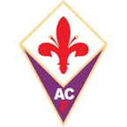
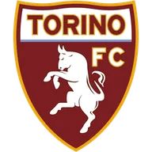

Интер — Комо итог матча 8 ноября
Статистика матча
- 14Удары5
- 4Удары в створ1
- 43 %Владение мячом57 %
- 4Угловые2
Данные ESPN.
- ТурнирСерия А
Коротко о матче
Интер — Комо 2:0: хозяева победили.
Главное перед игрой — серия: Комо — 6 побед подряд. По голам за эти пять матчей: Интер — в среднем 1,8 забито и 0,8 пропущено, Комо — 3,8 и 0,6.
Обе команды играют результативно: больше 2,5 мячей набиралось в 11 из 16 их последних матчей. Стоит учесть и площадку: дома Интер — 6 побед в 7 матчах, на выезде Комо — 5 побед в 8. До этого команды встречались 12 апреля 2026 года: Комо — Интер 3:4.
Форма: последние матчи
 Интер 4 победы из 5
Интер 4 победы из 5
 В1:0
В1:0
В2:1- В2:0
 П1:3
П1:3 В3:0
В3:0
 Комо 5 побед из 5
Комо 5 побед из 5
 В4:1
В4:1- В2:0

В3:1- В1:0
 В9:1
В9:1
Личные встречи
- Комо3:4Интер
- Интер4:0Комо
Положение в таблице
| Команда | Место | И | В | Н | П | Голы | Очки |
|---|---|---|---|---|---|---|---|
| 2 | 11 | 9 | 1 | 1 | 28:13 | 28 | |
| 5 | 11 | 7 | 2 | 2 | 18:10 | 23 |
Куда дальше
Все прогнозы дня — в TelegramПрогнозы на КХЛ, НХЛ и футбол, итоги каждое утро. Бесплатно.
Открыть каналМатериалы носят информационный характер и не гарантируют результат. Реклама букмекеров на сайте не размещается. Сайт только для совершеннолетних (18+).